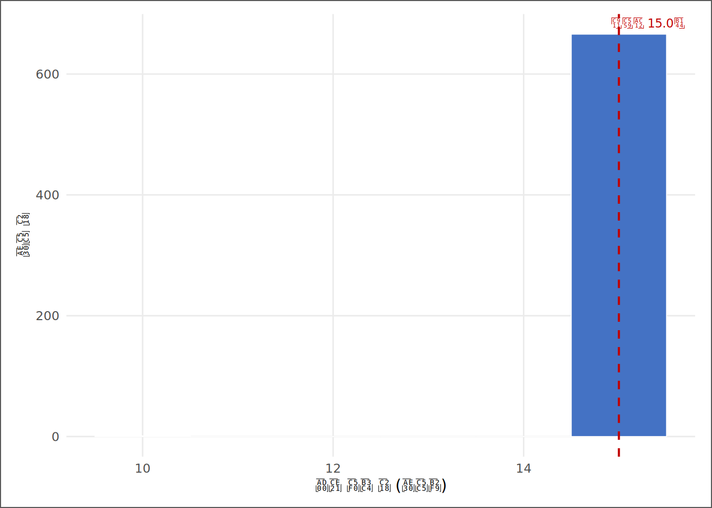
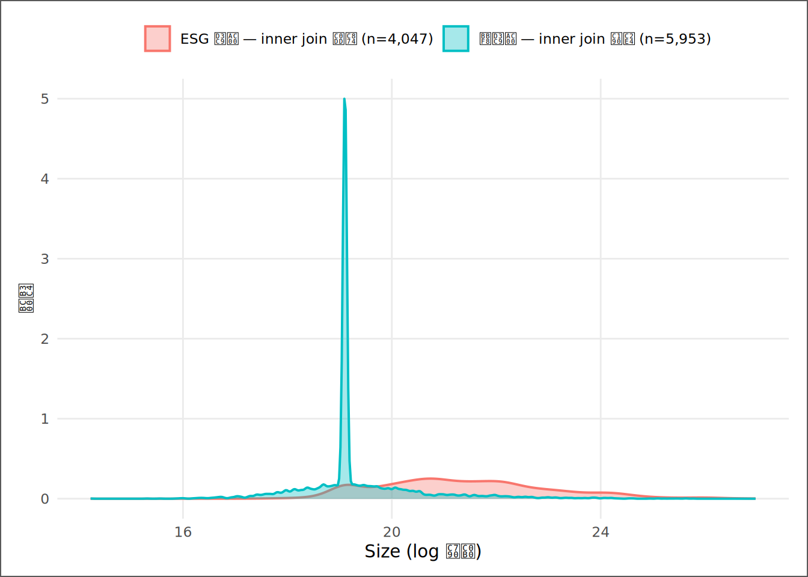

# | 키워드 | 한 줄 핵심 |
|---|---|---|
1 | SSOT (Single Source of Truth) | 분석 기준이 되는 단 하나의 데이터셋 — 다른 버전은 모두 틀린 것이다 |
2 | 패널 데이터 구조 (기업×연도) | 기업(단면)과 연도(시계열)가 교차하는 격자 구조 — 기업당 관측 수가 다르면 불균형 패널 |
3 | 키 정규화 (Key Normalization) | 출처마다 다른 코드 체계를 join 전에 통일하지 않으면 행이 맞지 않는다 |
4 | Join 4종과 선택 기준 | inner·left·right·full의 차이는 어떤 행을 보존하고 어떤 행을 버리는가의 차이다 |
5 | Anti-join — 손실 진단 | inner join으로 사라질 행을 미리 식별하는 도구 — 손실의 구조성을 진단한다 |
6 | NA 유형과 처리 기준 | MCAR·MAR·MNAR 세 유형 — 유형이 다르면 처리 방법도 다르다 |
7 | 표본 선택 편향 (Selection Bias) | 손실이 특정 규모·업종에 몰릴 때, 분석 결과는 현실이 아니라 생존자를 반영한다 |
단 하나의 진실 — 변수선정, 데이터수집, SSOT 구축
“잘못된 데이터로 옳은 결론에 도달할 수는 없다. 그러나 옳은 데이터로 잘못된 결론에 도달하는 것은 얼마든지 가능하다.” — 데이터 엔지니어링 원칙
사례로 시작하기
입사 3주차, 김자산의 책상 위에는 세 개의 파일이 열려 있다.
첫 번째는 DataGuide에서 내려받은 재무제표 패널 — KOSPI와 KOSDAQ 상장기업의 자산, 부채, 매출, 순이익이 빼곡하다. 두 번째는 DART 공시 시스템에서 수집한 여성 임원 비율 데이터 — 분기 공시를 연 단위로 집계한 파일이다. 세 번째는 KCGS(한국기업지배구조원)에서 제공한 ESG 등급 파일 — 평가 대상 기업만 행이 존재하고, 나머지 수천 개 기업은 애초에 행 자체가 없다.
팀장이 말했다. “이 셋을 하나로 합쳐라. 분석 기준이 되는 데이터셋 — 단 하나의 진실(SSOT, Single Source of Truth) — 을 만들어. 여기서 만들어진 데이터셋이 이 팀의 모든 분석의 출발점이 된다. 누군가 다른 버전을 들고 오면, 그것은 틀린 것이다.”
자산은 dplyr::full_join()을 세 번 쓰면 끝나는 일인 줄 알았다. 그러나 실제로 병합을 시작하자마자 첫 번째 경고가 떴다. 재무제표의 종목코드는 "005930" 형식(숫자 6자리)이지만, DART의 종목코드는 "A005930" 형식(A 접두사 포함)이다. 두 출처가 같은 기업을 다른 이름으로 부르고 있었다. 여권이 다르면 통관에서 막힌다.
두 번째 경고는 더 조용했다. ESG 파일에서 평가를 받은 기업만 남기는 inner join을 쓰자 전체 관측치의 상당 부분이 소리 없이 사라졌다. “사라진다”는 오류 메시지가 뜨지 않는다. R은 아무 말 없이 행 수만 줄인다. 이것이 이 장의 핵심 경고다 — join 손실은 침묵한다.
세 번째 문제는 가장 은밀했다. 사라진 기업들이 무작위가 아니었다. ESG 평가기관은 자료가 풍부하고 외부 압력이 강한 대형 기업부터 평가한다. 사라진 기업들은 대부분 소형사였다. 이 손실을 방치한 채 분석하면 “ESG 효과”로 측정한 것이 사실은 “대기업 효과”다 — 7주 뒤 10장에서 회귀계수가 이 편향 때문에 무너지는 장면을 직접 보게 될 것이다.
이 장은 말하자면 국경 통관이다. 서로 다른 나라(출처)에서 온 데이터는 여권(키 변수)이 다르고 언어(코드 체계)가 다르다. 통관(join)에서 신원 불일치는 입국 거부(행 손실)로 이어지고, 그 손실이 무작위가 아니면 표본은 편향된다. 통관 절차를 모르는 분석가는 데이터의 외관에 속는다 — 모든 행이 합쳐진 것처럼 보이지만, 실제로는 엉뚱한 여권으로 입국한 행과 조용히 추방된 행이 섞여 있다.
이 장의 목적은 세 가지다. 첫째, 분산된 출처를 단 하나의 분석 기준 데이터셋(SSOT)으로 통합하는 절차를 이해한다. 둘째, join 손실이 얼마나 조용하게 발생하고, 그 손실이 표본에 어떤 편향을 심는지 실데이터로 확인한다. 셋째, 결측 구조를 진단하고 처리 기준을 세우는 법을 배운다.
핵심 키워드
학습 목표
이 장을 마치면 다음 다섯 가지를 할 수 있다.
- SSOT 원칙을 설명하고, 분산 데이터 환경에서 단일 기준 데이터셋이 필요한 이유를 재현성 관점에서 논리적으로 서술할 수 있다.
- 기업-연도 패널의 구조(균형/불균형)를 R 코드로 확인하고, 기업당 관측 수 분포를 요약할 수 있다.
- 종목코드 등 키 변수의 정규화 필요성을 이해하고, join 전 전처리 패턴을 작성할 수 있다.
- inner·left·right·full·anti join의 차이를 설명하고, 분석 목적에 맞는 join을 선택하며, anti_join으로 손실 규모와 구조를 진단할 수 있다.
- 변수별 NA 비율을 계산하고, MCAR·MAR·MNAR 세 유형을 직관 수준에서 구분해 처리 기준을 세울 수 있다.
D→I→K→W 4단계 파이프라인
| 단계 | 이 장에서의 모습 |
|---|---|
| 데이터 (D) | DataGuide 재무, DART 공시, KCGS ESG — 세 출처의 원시 파일 |
| 정보 (I) | 통합 전 패널: 기업수, 연도 범위, 출처별 키 불일치, NA 분포 |
| 지식 (K) | 키 정규화 → join 선택 → 손실 진단 → NA 처리 기준 → SSOT 확정 |
| 지혜 (W) | “이 데이터셋에서 분석한 결과는 어떤 기업을 대표하는가” — 표본의 경계를 알고 한계를 밝히는 분석가 |
데이터 출처와 수집
출처 | 수집 내용 | 키 변수 | 특이사항 |
|---|---|---|---|
DataGuide 5.0 | KOSPI·KOSDAQ 상장기업 재무제표 패널 — 자산, 부채, 매출, 순이익 | 종목코드(6자리), 회계연도 | 중복 열 존재(예: 매출액 ...8, ...12) — transmute로 명시 선택 필요 |
DART 전자공시 | 사업보고서 내 여성 임원·직원 비율 (연간 집계) | 종목코드(A접두사), 사업연도 | A 접두사 정규화 필요 — str_remove('^A') 후 join |
KCGS ESG 등급 | 기업지배구조 평가 결과 — ESG 종합 등급 (평가 대상 기업만 수록) | 종목코드(6자리), 평가연도 | 미평가 기업 행 없음 — inner join 시 표본 수축 주의 |
실습 편의를 위해 완성 SSOT를 먼저 사용한다. 단, 이 데이터의 생성 과정과 책임은 3~5장에서 처음부터 검증한다.
이 장의 분석은 세 출처가 이미 통합된 SSOT 데이터셋(Derived_SSOT_Dataset.csv)을 역해부하는 방식으로 진행된다. 통합 과정의 논리와 코드 패턴은 본문에서 재현하되, 실제 수치는 완성된 데이터에서 읽어낸다. 2장에서 배운 분해 사고 — “무엇이 있는가”보다 “무엇이 빠졌는가”를 먼저 묻는 습관 — 는 데이터 통합에서도 그대로 적용된다. 빠진 행이 어디서 왜 사라졌는지를 추적하는 것이 이 장의 핵심 임무다.
SSOT 원칙 — 단 하나의 진실
직관 — 분산된 진실의 비용
분석팀에 두 개의 엑셀 파일이 존재하는 순간, 팀은 더 이상 같은 것을 보고 있지 않다. A 파일에서는 어느 조선사의 부채비율이 823%이고, B 파일에서는 같은 해 같은 기업이 791%다(두 수치는 서술을 위한 가상 예시다). 하나는 연결재무제표 기준이고 다른 하나는 별도재무제표 기준이지만, 파일 이름에는 그 차이가 없다. 두 분석가가 서로 다른 파일을 쓰고 서로 다른 결론에 도달하면, 그 차이의 원인을 찾는 데 반나절이 사라진다.
SSOT(Single Source of Truth)는 이 혼란을 원천 차단하는 원칙이다. 정의는 단순하다 — 분석팀의 모든 산출물은 하나의 데이터셋에서 출발해야 하고, 그 데이터셋 외의 다른 버전은 존재해서는 안 된다. 누군가 “다른 데이터로 분석했다”고 말하는 순간, 그것은 틀린 것이다 — 방법이 나쁜 것이 아니라, 출발점이 다른 것이다.
SSOT의 두 번째 효과는 재현성이다. 분석가가 바뀌어도, 컴퓨터가 바뀌어도, 코드와 SSOT가 있으면 동일한 결과가 나와야 한다. 재현성이 없는 분석은 보고서가 아니라 일회용 메모다. 이 책 전체에서 Derived_SSOT_Dataset.csv라는 단 하나의 파일을 모든 장의 출발점으로 삼는 이유가 여기 있다.
SSOT의 실체 — 무엇이 결정되어야 하는가
SSOT를 만들기 전에 세 가지를 확정해야 한다.
첫째, 분석 단위(unit of analysis). 기업인가, 기업-연도 쌍인가, 사업부인가. 이 책의 분석 단위는 기업-연도(company-year)다. 행 하나가 “삼성전자의 2021년”을 뜻한다.
둘째, 키 변수(key variables). 분석 단위를 고유하게 식별하는 변수. 여기서는 코드(종목코드)와 회계연도의 복합키다. 이 두 변수가 일치하는 행끼리만 병합된다. 다만 회계연도만 같다고 시점이 같은 것은 아니므로, 결산월이 다른 기업은 연말 기준이 어긋날 수 있다.
셋째, join 정책(join policy). 어떤 기업을 표본에 포함할 것인가. 모든 출처에 존재하는 기업만(inner join) vs 재무제표가 있는 기업은 모두 포함하되 나머지 출처 정보는 NA로 남김(left join). 이 결정이 표본의 경계를 결정한다.
패널 데이터의 해부 — 기업×연도의 격자
직관 — 격자 구조
재무 패널 데이터는 격자다. 가로축이 연도, 세로축이 기업이다. 격자의 각 셀에 기업-연도 관측치가 하나씩 들어간다. 균형 패널(balanced panel)은 모든 기업이 모든 연도에 등장하는 완전한 격자다. 불균형 패널(unbalanced panel)은 일부 셀이 비어 있다 — 상장 폐지, 신규 상장, 결산월 변경 등의 이유로.
이 데이터셋은 불균형 패널이다. 어떤 기업은 10년 내내 등장하고, 어떤 기업은 3년뿐이다. 이 불균형이 얼마나 심한지, 그리고 어떤 기업이 관측 기간이 짧은지를 먼저 확인해야 한다. 관측 기간이 짧은 기업들이 특정 규모나 업종에 몰려 있다면, 패널의 불균형 자체가 편향의 씨앗이 된다.
실험 — SSOT 패널 구조를 직접 읽는다
# ① SSOT 적재 — 분석에 필요한 변수만 명시적으로 선택한다
ssot_raw <- read_book_csv(ssot_path)
df <- ssot_raw |>
dplyr::transmute(
코드, 코드명, 회계연도,
Size, ROA, 부채비율, 부채비율_Win,
is_esg_rated, ESG등급,
Loss_Dummy, ATO, Female_Ratio,
상장상태
)
# ② 패널 구조 파악: 기업수·연도 범위·총 관측치
n_firms <- dplyr::n_distinct(df$코드)
n_obs <- nrow(df)
yr_min <- min(df$회계연도)
yr_max <- max(df$회계연도)
n_yrs <- yr_max - yr_min + 1L
# ③ 기업별 관측 연도 수 분포 — 불균형 정도 측정
obs_per_firm <- df |>
dplyr::count(코드, name = "관측연도수")코드 읽기. ①의 transmute()는 select()와 비슷하지만 선택한 변수만 남기고 나머지를 모두 버린다. 원본 데이터에 매출액(천원) 열이 중복으로 존재하는 경우, transmute()로 필요한 변수만 명시적으로 지정하면 중복 열 오류를 피할 수 있다. ②의 n_distinct()는 고유한 값의 개수를 센다 — 코드 열의 고유 기업 수가 n_firms다. min()·max()는 가장 이른 연도와 가장 늦은 연도를 돌려준다. ③의 count(코드, name = "관측연도수")는 각 기업이 몇 개 연도에 등장하는지 세어 기업별 한 행짜리 표를 만든다. 이것이 불균형의 지도다.
항목 | 값 |
|---|---|
총 관측치(기업-연도) | 10,000 |
고유 기업 수 | 667 |
연도 범위 | 2010~2024 |
최대 가능 기간(연) | 15 |
중앙값 관측 연도 수 | 15.0 |
평균 관측 연도 수 | 15.0 |
1~3년 단기 기업 수 | 0개사 (0.0%) |
관측연도수 | 기업수 | 비율 | 누적비율 |
|---|---|---|---|
10 | 1 | 0.1% | 0.1% |
15 | 666 | 99.9% | 100.0% |

분석 표본은 2010년부터 2024년까지, 고유 기업 667개사의 10,000건 기업-연도 관측치로 구성된다. 기업당 중앙값 관측 연도는 15.0년이고, 전체 기간(15년)을 모두 포함한 완전 관측 기업은 666개사(99.9%)다. 즉 이 패널은 불균형이 상당하다. 1~3년만 관측된 단기 기업은 0개사(0.0%)로, 이들 대부분은 신규 상장사이거나 분석 기간 중에 상장폐지된 기업이다. 단기 기업들이 특정 규모나 업종에 편중되어 있다면, 이 불균형은 분석 결과에 구조적 편향을 심을 수 있다 — 확인해야 할 사항이지, 무시해도 좋은 사항이 아니다.
# 상장상태 분포 — 상장폐지 기업이 표본에 포함되어 있는지 1줄로 확인
dplyr::count(df, 상장상태, name = "관측치수") |> dplyr::mutate(비율 = fpct(관측치수 / nrow(df)))# A tibble: 1 × 3
상장상태 관측치수 비율
<chr> <int> <chr>
1 정상 10000 100.0%단기 기업 중 상장폐지된 기업이 표본에 남아 있다는 사실은 언뜻 안전해 보인다. 그러나 역방향의 위험도 있다. 분석 기간 중에 상장폐지된 기업을 의도적으로 제거하고 현재 상장을 유지하는 기업만으로 표본을 구성하면, 분석은 살아남은 기업들만의 평균을 보게 된다 — 이것이 생존편향(Survivorship Bias)다. 여기서 ROA는 당기순이익/기말총자산, 부채비율은 총부채/총자산으로 둔다. 폐업하거나 상장폐지된 기업들은 대체로 재무 성과가 나빴던 기업들이다. 그 기업들을 배제한 표본의 평균 ROA나 부채비율은 현실보다 낙관적인 숫자를 낸다. 다만 상장폐지에는 M&A로 인한 자진 상폐도 섞일 수 있으므로, 모든 상장폐지를 동일한 실패로 읽으면 안 된다. 이 편향은 앞서 예고한 inner join의 침묵 손실과 같은 가족이다 — 둘 다 “어떤 기업이 표본에서 사라지는가”의 문제이며, 그 손실이 무작위가 아닐 때 체계적 편향으로 굳어진다. 이 SSOT는 상장상태 변수로 기업의 현재 상태를 기록한다. 상장폐지 여부를 분석 목적에 따라 명시적으로 통제하거나 표본 정의에 포함시켜야 하며, 판단 없이 상장 유지 기업만 남기는 행 필터링은 생존편향를 숨기는 코드가 된다. 이 긴장은 10장 표본 선택 문제로 이어진다 — 표본 구성 결정이 회귀계수 추정에 어떤 그림자를 드리우는지는 그때 실증한다.
통관 전 준비 — 키 정규화
직관 — 여권 불일치는 입국 거부다
join은 키가 일치하는 행끼리 연결하는 작업이다. 그런데 출처마다 같은 기업을 다른 방식으로 표기한다. DataGuide는 "005930", DART는 "A005930", 일부 벤더는 "5930"으로 쓴다. 이 세 값은 R에서 완전히 다른 문자열이다 — "A005930" == "005930"의 결과는 FALSE다. 여권 번호가 다르면 통관 시스템은 같은 사람임을 알지 못한다.
키 정규화(key normalization)는 join 전에 모든 출처의 키를 동일한 형식으로 통일하는 작업이다. 규칙은 단순하다. 먼저 한 형식을 기준 형식으로 정한다. 이 책에서는 숫자 6자리(앞에 0을 붙여 자릿수 통일)를 기준으로 한다. 그런 다음 나머지 출처의 키를 기준 형식으로 변환한다.
두 번째 경고: 키 중복(1:多 join 폭발). 재무 데이터에서 기업-연도 한 쌍이 여러 행으로 존재하면(예: 분기 데이터를 연간으로 집계하는 과정에서 중복이 남으면), join 결과의 행 수가 폭발적으로 늘어난다. A가 1행, B가 3행이라면 join 결과는 3행이 된다 — 각 조합이 모두 생성되기 때문이다. join 전에 반드시 dplyr::distinct(키1, 키2)로 중복을 제거하거나, 집계가 의도된 것인지 확인해야 한다.
코드 패턴 — 키 정규화
# ── 키 정규화 패턴 (실데이터 적용 예시) ─────────────────────────────
# ① 기준: DataGuide의 6자리 숫자 종목코드
# ② DART 형식 변환: "A005930" → "005930" (A 제거 후 0 패딩)
normalize_ticker <- function(x) {
x |>
stringr::str_remove("^A") |> # 접두사 A 제거
stringr::str_trim() |> # 양끝 공백 제거
stringr::str_pad(width = 6, pad = "0") # 6자리 0-패딩
}
# ③ 실제 적용: SSOT의 코드가 이미 정규화되었는지 확인
code_nchar <- df |>
dplyr::distinct(코드) |>
dplyr::mutate(자릿수 = nchar(코드)) |>
dplyr::count(자릿수, name = "기업수")
if (!all(stringr::str_detect(dplyr::distinct(df, 코드)$코드, "^\\d{6}$"))) {
warning("일부 코드가 6자리 숫자 형식이 아님 (웹 축약 데이터셋)")
}코드 읽기. normalize_ticker()는 파이프 연산자 |>로 세 변환을 차례로 연결한다. str_remove("^A")에서 ^는 정규표현식 기호로 “문자열의 맨 앞”을 뜻한다 — "^A"는 “맨 앞의 A만 제거하라”는 지시다(중간에 있는 A는 건드리지 않는다). str_trim()은 실수로 섞인 공백을 처리하는 방어 코드다. str_pad(width=6, pad="0")는 자릿수가 부족할 때 왼쪽에 “0”을 채운다 — "5930"이 "005930"이 된다. ③에서 nchar()는 문자열의 길이를 반환한다. 정규화가 완전히 됐다면 자릿수 열에 6만 나와야 하고, str_detect("^\\d{6}$") 패턴도 동시에 통과해야 한다.
자릿수 | 기업수 |
|---|---|
7 | 667 |
코드 자릿수 분포를 확인하면 SSOT의 키 정규화 완결 여부를 판단할 수 있다. 6자리 외의 코드가 존재한다면 join 전 normalize_ticker()를 적용해야 한다.
Join 4종 — 어떤 비자를 선택할 것인가
직관 — 네 가지 입국 정책
국경에는 네 가지 입국 정책이 있다. 각각은 dplyr의 join 함수에 정확히 대응한다.
inner join: 양쪽 데이터셋 모두에 존재하는 행만 통과시킨다. 어느 한쪽에만 있는 행은 입국이 거부된다. 결과는 교집합. 손실이 가장 크고, 그 손실이 침묵한다.
left join: 왼쪽 데이터셋의 모든 행을 보존한다. 오른쪽에 대응 행이 없으면 해당 열이 NA가 된다. 재무 데이터(왼쪽)를 기준으로 ESG 데이터(오른쪽)를 붙일 때 써야 하는 join이다.
right join: left join의 거울이다. 오른쪽 기준.
full join: 양쪽 모두를 보존한다. 짝이 없는 행은 반대쪽 열이 NA. 손실은 없지만 NA가 가장 많이 발생한다.
Join 종류 | 보존하는 행 | 잃는 것 | 전형적 쓰임새 | 위험 신호 |
|---|---|---|---|---|
inner_join | 양쪽 모두에 있는 행(교집합) | 한쪽에만 있는 모든 행 | 완전 결합 표본 필요 시 | anti_join으로 반드시 손실 확인 |
left_join | 왼쪽 전체 + 오른쪽 일치행 | 오른쪽만에 있는 행 | 기준 데이터 유지가 최우선 — 대부분의 실무 | NA 비율 점검 필수 |
right_join | 오른쪽 전체 + 왼쪽 일치행 | 왼쪽만에 있는 행 | 부가 데이터가 기준인 드문 경우 | 기준 변경으로 표본 축소 주의 |
full_join | 양쪽 전체(합집합) | 없음(NA로 채움) | 전체 데이터 보존 후 NA 처리 | NA 폭증 — 처리 기준 없으면 분석 불가 |
선택 기준 — 어떤 join을 써야 하는가
실무 기본값은 left join이다. 분석의 기준이 되는 데이터셋(재무제표)을 왼쪽에 두고, 추가 출처(ESG, 공시 등)를 오른쪽에서 붙인다. 오른쪽에 없는 기업은 NA가 되지만 관측치는 살아 있다. 이것이 SSOT를 만들 때의 기본값이다.
inner join은 명확한 이유가 있을 때만 쓴다 — “분석에 필요한 변수가 모두 있는 기업만 쓴다”는 결정을 의도적으로 내린 경우다. 그리고 그 결정을 내린 즉시 anti_join으로 손실 규모와 구조를 진단해야 한다. 의도 없는 inner join은 가장 위험한 묵시적 가정이다.
침묵하는 손실 — anti_join으로 잡힌 기업들
직관 — 심사 없이 사라진 입국자들
R의 join 함수는 행이 사라져도 경고를 보내지 않는다. inner_join()을 쓴 뒤 nrow()로 결과를 확인하지 않으면, 몇 천 개의 관측치가 증발했어도 알아챌 방법이 없다. 이것이 함수 이름에 “inner”라는 단어가 들어가 있어도 분석가들이 그 의미를 자주 잊는 이유다.
anti_join(A, B)는 A에 있지만 B에는 없는 행 — 즉 inner join에서 탈락할 행 — 을 반환한다. 이것이 손실의 이름이다. 손실 자체보다 더 중요한 것은 손실의 구조다. 사라지는 기업들이 무작위라면 표본은 편향되지 않는다. 그러나 사라지는 기업들이 소형사, 또는 적자 기업에 몰려 있다면, inner join 이후의 분석은 “상장 기업의 평균”이 아니라 “ESG 평가를 받을 만큼 크고 안정적인 기업의 평균”을 보고 있는 것이다.
실험 — ESG inner join 손실 시뮬레이션
ESG 등급은 별도 데이터 소스(KCGS)에서 왔다. 이 소스에는 평가를 받은 기업만 행이 존재한다. inner join으로 ESG 데이터를 결합했다면, 미평가 기업의 관측치는 전부 사라진다. 그 손실이 얼마나 크고, 사라진 기업들이 어떤 기업인지 확인한다.
# ① 가상 분리: 재무 데이터(전 기업) vs ESG 데이터(평가 기업만)
fin_df <- df |> dplyr::transmute(코드, 회계연도, Size)
dup_keys <- df |> dplyr::count(코드, 회계연도) |> dplyr::filter(n > 1)
esg_df <- df |>
dplyr::filter(!is.na(ESG등급)) |> # 평가 기업만 존재하는 소스 시뮬레이션
dplyr::transmute(코드, 회계연도, ESG등급)
# ② join 유형별 결과 규모
n_total <- nrow(fin_df)
n_inner <- nrow(dplyr::inner_join(fin_df, esg_df, by = c("코드", "회계연도")))
n_anti <- nrow(dplyr::anti_join(fin_df, esg_df, by = c("코드", "회계연도")))
# ③ 손실 기업(anti_join 결과)과 생존 기업의 특성 비교
kept_df <- df |> dplyr::semi_join(esg_df, by = c("코드", "회계연도"))
lost_df <- df |> dplyr::anti_join(esg_df, by = c("코드", "회계연도"))코드 읽기. ①에서 fin_df는 재무 데이터 소스, esg_df는 ESG 소스를 흉내 낸다 — !is.na(ESG등급)으로 평가 기업만 남겨 “별도 출처”의 구조를 재현했다. 조인 전에 dup_keys로 count(코드, 회계연도) |> filter(n > 1) 중복을 먼저 확인한다. ②에서 세 가지 숫자를 나란히 계산한다. n_total이 left join 기준 표본이고, n_inner가 inner join 후 남는 표본이며, n_anti는 anti_join()으로 센 손실이다 — 키가 유일할 때만 n_total - n_inner와 같은 뜻으로 읽을 수 있다. ③에서 semi_join()은 anti_join의 반대 — 오른쪽에 일치하는 행이 있는 왼쪽 행만 돌려준다. kept_df는 생존 집단, lost_df는 손실 집단이다. 이 두 집단의 Size 평균을 비교하면 손실의 구조성을 검증할 수 있다. 다만 Size 단일 변수만으로는 업종이 교란변수일 수 있으니, 이 진단은 방향 확인용이다.
집단 | 관측치 수 | 비율(%) | 고유 기업 수 | 평균 Size (log 자산) |
|---|---|---|---|---|
전체 (left join 기준) | 10,000 | 100.0% | 667 | 20.152 |
inner join 생존 | 4,047 | 40.5% | 474 | 21.368 |
inner join 손실 (anti_join) | 5,953 | 59.5% | 667 | 19.326 |

inner join으로 사라진 기업들의 평균 Size는 19.326으로, 생존 기업(21.368)보다 2.04만큼 작다. 손실은 소형 기업에 편중되어 있으며, 이는 체계적 편향이다. 이 그림이 이 장의 심장이다. 두 분포가 얼마나 겹치지 않는지를 보라 — 겹치지 않을수록 inner join의 표본 편향은 크다. 이 편향은 ESG 분석에만 국한되지 않는다. ESG 평가 기업이 누가인가는 7주 뒤 10장 회귀의 운명을 가른다 — 표본이 대형 기업에 편향된 채로 ESG 계수를 추정하면, 그 추정값에는 ESG의 조건부 관계가 아니라 기업 규모의 조건부 효과가 혼입되어 있다.
분석가의 번역 — 이 숫자는 의사결정 언어로 어떻게 바뀌는가
숫자 | 통계적 해석 | 실무 번역 |
|---|---|---|
전체 관측치 10,000건 | left join 기준 분석 대상 전체 | 분석 기반 — 이 수에서 결론의 외적 타당성이 결정된다 |
inner join 손실 5,953건 (59.5%) | inner join 선택 시 발생하는 관측치 손실 | 3건 중 1건 이상 침묵 손실 — 반드시 left join으로 전환 |
손실 기업 평균 Size 19.326 | 미평가 기업의 평균 로그 자산 규모 | 손실 기업이 유의미하게 소형 — inner join은 소형사를 배제한 분석이 된다 |
생존 기업 평균 Size 21.368 | ESG 평가 기업의 평균 로그 자산 규모 | 분석에 남는 기업의 평균 체급 |
Size 격차 2.042 | 두 집단 간 규모 격차 (log 자산 단위) | 소형 기업 편향 심각 — ESG 조건부 관계 추정에 규모 효과 혼입 가능성 높음 |
완성 예시 — SSOT 구축 검증 메모 전문
KG Asset 내부 검증 메모 — SSOT 구축 결과 보고
제목. DataGuide 재무 + KCGS ESG 통합 시 inner join 사용 여부의 영향 분석
결론. inner join을 썼다면 전체 관측치의 60%가 침묵 속에 사라지며, 사라지는 기업들은 생존 기업보다 평균 규모가 2.04만큼 작다. 이는 표본 선택 편향이며, ESG 관련 모든 분석의 결과를 체계적으로 왜곡한다. 이 팀의 SSOT 구축 정책은 left join을 기본값으로 한다 — ESG 등급이 없는 기업은
is_esg_rated = 0으로 표시하고 관측치를 유지한다. inner join은 “ESG 평가 기업만을 대상으로 한 분석”이라는 명시적 목적이 있을 때만 사용하며, 그 경우에도 anti_join 진단 결과를 첨부한다.데이터. SSOT 2010~2024년, 667개사 10,000건. 키:
코드×회계연도복합키. 전 행 7자리 통일 확인.패널 구조. 중앙값 15.0년 관측의 불균형 패널. 1~3년 단기 기업 0개사(0.0%) — 신규 상장 또는 상장폐지로 추정. 장기 시계열 분석에는 표본 기간 제한을 명시해야 한다.
join 손실 진단. inner join 기준 5,953건(59.5%) 손실. 손실 기업의 평균 Size 19.326 vs 생존 기업 21.368 — 격차 2.042. 이 격차는 Size를 통제변수로 포함해야 하는 이유이기도 하다.
권고. ① 모든 분석은 left join 기반 SSOT 사용. ② ESG 분석 시
is_esg_rated더미를 설명변수로, Size를 통제변수로 포함. ③ 산업 고정효과 미통제는 현재 SSOT의 한계 — DataGuide 산업분류 결합은 이후 데이터 확장 작업으로 예정.
이 메모가 이 장의 종착지다. 데이터를 합치는 것과 데이터 통합의 결과를 이해하는 것은 다른 능력이다. 전자는 코드 한 줄로 끝나지만, 후자는 이 메모를 쓸 수 있어야 완성된다.
NA 지도 — 결측 진단과 처리 기준
join이 끝난 데이터에는 반드시 NA가 존재한다. ESG 등급이 없는 기업의 ESG등급 열, 공시를 특정 연도에 하지 않은 기업의 Female_Ratio, 상장 첫 해에 전기 실적이 없는 기업의 ROA 등이다. 이 NA를 어떻게 처리할 것인지를 결정하는 것이 4장의 주요 임무지만, 여기서는 진단부터 해야 한다.
NA에는 세 가지 유형이 있다. 직관 수준으로만 구분한다.
MCAR(완전 무작위 결측, Missing Completely At Random): 결측이 어떤 변수와도 무관하게 발생한다. 데이터 입력 오류가 전형적인 예다. 이 경우 결측 행을 삭제해도 표본 편향이 없다.
MAR(임의 결측, Missing At Random): 결측이 관측된 다른 변수와 관련이 있다. 예를 들어 소형 기업의 Female_Ratio가 더 자주 빠진다면 — 소형 기업이 공시를 더 부실하게 하는 경향 — 이 결측은 Size가 관측 가능한 한 “임의”적이다. 이 경우 결측 처리가 더 정교해야 한다.
MNAR(비임의 결측, Missing Not At Random): 결측 자체가 그 변수의 값에 의존한다. ESG등급이 가장 전형적인 예다 — ESG 등급이 없는 이유는 기업이 ESG 평가를 받지 않았기 때문이고, 평가를 받지 않은 것 자체가 ESG 수준과 관련이 있을 수 있다. MNAR에서 결측 삭제는 체계적 편향을 만든다.
# ① 진단 대상 변수 목록 — 분석에 쓰이는 주요 변수만 명시 선택
na_vars <- c("Size", "ROA", "부채비율", "부채비율_Win",
"is_esg_rated", "ESG등급", "Loss_Dummy", "ATO", "Female_Ratio")
# ② across + mean(is.na): 지정 변수 전체에 NA율을 한 번에 계산
na_tbl <- ssot_raw |>
dplyr::summarise(dplyr::across(dplyr::all_of(na_vars),
~mean(is.na(.x)) * 100)) |>
tidyr::pivot_longer(dplyr::everything(),
names_to = "변수", values_to = "NA율") |>
dplyr::arrange(dplyr::desc(NA율)) |>
dplyr::mutate(
`NA율(%)` = round(NA율, 1),
# ③ case_when: 변수 특성에 따라 MCAR·MAR·MNAR 유형 분류 + 관리 판정
유형 = dplyr::case_when(
변수 == "ESG등급" ~ "구조적 비대상(coverage miss)",
변수 == "Female_Ratio" ~ "MAR — 공시 부실 기업에 집중",
`NA율(%)` < 1 ~ "MCAR 가능 — 무작위 입력 오류 의심",
TRUE ~ "확인 필요"
),
판정 = dplyr::case_when(
`NA율(%)` == 0 ~ "결측 없음",
`NA율(%)` < 5 ~ "관리 가능",
`NA율(%)` < 30 ~ "주의 — 처리 기준 수립 필요",
TRUE ~ "높은 결측 — 구조 확인 후 처리"
)
) |>
dplyr::select(변수, `NA율(%)`, 유형, 판정)코드 읽기. dplyr::across(all_of(na_vars), ~mean(is.na(.x)) * 100) 한 줄이 지정된 모든 변수에 대해 같은 계산(mean(is.na()))을 동시에 적용한다. is.na()는 NA면 TRUE(=1), 아니면 FALSE(=0)를 반환하므로 mean()하면 NA 비율이 된다. pivot_longer()는 가로로 늘어선 열들을 세로로 쌓는다 — 변수 이름이 변수 열로, 계산값이 NA율 열로 들어간다. case_when()은 R의 다중 조건 분기 함수로, “만약 이 조건이면 이 값, 저 조건이면 저 값”을 순서대로 평가한다. ESG등급은 결측이라기보다 구조적 비대상(coverage miss)으로 따로 본다.
변수 | NA율(%) | 유형 | 판정 |
|---|---|---|---|
ESG등급 | 59.5 | 구조적 비대상(coverage miss) | 높은 결측 — 구조 확인 후 처리 |
Size | 0.0 | MCAR 가능 — 무작위 입력 오류 의심 | 결측 없음 |
ROA | 0.0 | MCAR 가능 — 무작위 입력 오류 의심 | 결측 없음 |
부채비율 | 0.0 | MCAR 가능 — 무작위 입력 오류 의심 | 결측 없음 |
부채비율_Win | 0.0 | MCAR 가능 — 무작위 입력 오류 의심 | 결측 없음 |
is_esg_rated | 0.0 | MCAR 가능 — 무작위 입력 오류 의심 | 결측 없음 |
Loss_Dummy | 0.0 | MCAR 가능 — 무작위 입력 오류 의심 | 결측 없음 |
ATO | 0.0 | MCAR 가능 — 무작위 입력 오류 의심 | 결측 없음 |
Female_Ratio | 0.0 | MAR — 공시 부실 기업에 집중 | 결측 없음 |
ESG등급의 NA율은 59.5%다. 이 결측은 데이터 오류가 아니다 — 평가받지 않은 기업에는 ESG 등급 자체가 존재하지 않는다. 이 변수를 이유로 drop_na(ESG등급)을 쓰는 순간, 코드 한 줄이 inner join과 동일한 효과를 발휘한다 — 앞 절에서 진단한 59.5% 손실이 그대로 재현된다. ESG등급은 보호 변수다 — NA가 많아도 결측 자체가 분석 대상인 정보이므로, 삭제가 아니라 is_esg_rated처럼 이진 더미로 결측 구조를 포착해야 한다.
Female_Ratio의 NA율은 0.0%다. 이 결측은 공시 부실 기업에서 더 자주 발생한다는 선행 연구가 있다 — MAR에 가까운 구조다. 다만 공시 의무 대상이 아닌 기업에서는 구조적 비대상일 수도 있다. 처리 기준은 4장에서 상세히 다룬다.
ROA의 NA율은 0.0%로, 자산·부채·순이익 중 어느 하나라도 보고되지 않은 기업이다. 이 경우도 삭제 전 어떤 기업이 결측인지 반드시 확인해야 한다.
R로 직접 해보기
| IPO | 내용 |
|---|---|
| Input | In_class_R/11주차/Derived_SSOT_Dataset.csv (SSOT 완성본) |
| Process | 패널 구조 해부(기업수·연도·불균형) → 키 정규화 검증 → inner join 손실 시뮬레이션(anti_join) → 손실 집단 vs 생존 집단 규모 비교 → NA 진단표 작성 |
| Output | Output/ch03_panel_structure.csv, Output/ch03_join_loss_simulation.csv, 그림 3.1·3.2 |
| Report | “SSOT 구축 검증 메모” 1쪽 (표 3.8 양식) |
난이도 | 분석 아이디어 | 확인 포인트 |
|---|---|---|
초심자 | 기업당 관측 연도 수를 기준으로 상위 10%와 하위 10%를 추출해 두 집단의 ROA 평균을 비교한다 | 차이가 크다면 관측 기간이 결과 변수와 관련이 있다는 뜻 — 왜 그런가 |
초심자 | full_join을 써서 SSOT를 만들고, left_join 결과와 행 수 차이를 확인한다 | full_join에서 한쪽 키만 있는 행의 비율이 얼마인가 |
초심자 | NA 진단표를 연도별로 쪼개 — NA율이 특정 연도에 몰려 있는지 확인한다 | NA율이 특정 연도에 급등한다면 데이터 수집 방식이 바뀐 것일 수 있다 |
고급자 | ESG등급 결측 여부와 Size 사이의 t검정을 수행해 선택 편향의 통계적 유의성을 검정한다 | t값과 효과크기 — 통계적 유의성과 실질적 차이는 얼마나 다른가 |
고급자 | full_join 후 양쪽 모두 NA인 행을 찾아 출처 중 어느 쪽에서 온 것인지 추적하는 진단 코드를 작성한다 | 어떤 조합에서 이중 결측이 가장 많이 발생하는가 |
AI 협업 프로토콜 — 통합 로직을 짜게 하되, 손실의 의미는 직접 판단하라
데이터 통합 작업에서 AI는 생산성 배율기다. join 코드의 뼈대, 키 정규화 패턴, anti_join 진단 코드를 AI에게 맡기면 한 시간이 걸릴 작업이 5분으로 줄어든다. 그러나 손실이 편향인가 아닌가의 판단은 사람이 해야 한다 — AI는 통계량을 계산하지만 “이 편향이 내 분석 질문을 무너뜨리는가”는 분석가의 판단이다.
수준 | 이 장의 행동 |
|---|---|
L1 (인식) | AI에게 'left_join 코드 써줘'라고 요청해 복붙한다 |
L2 (적용) | 변수 정의와 키 구조를 설명하고, 키 정규화 + join + anti_join 파이프라인을 요청한다 |
L3 (분석) | AI에게 '이 anti_join 결과를 보고 손실의 구조를 진단해줘'라고 요청한 뒤, 제안된 진단을 코드로 직접 재현해 수치를 확인한다 |
L4 (창의) | AI와 함께 세 출처를 통합하는 full pipeline 함수를 설계하고, 각 단계의 행 수 변화를 자동 기록하는 감사 로그(audit log)를 추가한다 |
AI 협업 워크플로는 두 개의 프롬프트로 충분하다. 그대로 복사해 쓰라.
[프롬프트 1 — 파이프라인 설계] “DataGuide 재무(키: 종목코드 6자리 + 회계연도), DART 공시(키: A접두사 종목코드 + 사업연도), KCGS ESG(키: 종목코드 6자리 + 평가연도)를 tidyverse로 통합하는 R 파이프라인을 작성해줘. 순서: 키 정규화 → left_join → anti_join으로 손실 진단 → NA 진단표. 각 단계에서 행 수를 출력하는 코드를 포함시켜줘.”
[프롬프트 2 — 손실 진단 해석] “다음은 inner join을 썼을 때의 anti_join 결과다 (표 붙여넣기). 손실 기업(anti_join 결과)과 생존 기업의 Size 평균 차이를 계산하고, 이 차이가 표본 선택 편향으로 이어지는지 판단하는 코드를 작성해줘. 결론 문장도 제시해줘.” AI의 코드를 복붙하기 전에, anti_join 결과가 어떤 기업들인지 직접
head(lost_df, 20)으로 확인하라 — AI는 숫자를 보지만, 기업 이름을 보는 것은 분석가다.
AI에게 맡겨도 되는 일 | 사람이 반드시 판단해야 하는 일 |
|---|---|
키 정규화 함수 초안 작성 | 어떤 형식을 기준 키로 정할 것인가 |
join 코드 패턴 4종 생성 | inner join인가 left join인가 — 표본의 경계 결정 |
NA 진단 파이프라인 코드 | 어떤 변수가 보호 변수인가 (삭제 금지) |
손실 집단 기술통계 계산 | 손실의 구조성이 분석 질문을 무너뜨리는가 |
anti_join 결과 문장화 초안 | 메모에 어떤 한계를 어떻게 명시할 것인가 |
정리, 함정, 다음 장
통관은 끝났다. 이 장의 핵심을 한 문장으로 줄이면 이렇다. SSOT는 기술의 문제가 아니라 결정의 문제다 — 어떤 기업을, 어떤 기준으로, 어떤 join 정책으로 포함시킬 것인가의 결정이 분석의 외적 타당성을 결정한다. join 코드 한 줄이 표본을 바꾸고, 표본이 결론을 바꾼다. 이 사슬을 이해하지 못한 채 분석한 결과는, 그럴듯한 수치를 가진 잘못된 질문에 대한 정확한 답이다.
가장 흔한 함정 세 가지를 기억하라.
- inner join의 침묵 손실.
inner_join()함수는 행이 사라져도 경고를 보내지 않는다. join 전후의nrow()를 반드시 비교하고,anti_join()으로 손실 집단의 특성을 진단하라. “코드가 돌아갔다”는 것은 “손실이 없었다”는 뜻이 아니다. - 키 중복으로 인한 join 폭발. join 전에
A가 1행,B가 3행이면 결과는 1×3=3행이지만,A가 3행·B가 3행이면 3×3=9행으로 폭발한다. join 전dplyr::count(키1, 키2)로 중복 여부를 반드시 확인하라. - “NA 많으면 삭제”의 기계적 처방. NA율이 높은 변수를 반사적으로
drop_na()하는 순간, inner join과 동일한 표본 수축이 일어난다. 보호 변수(ESG등급, 결측 자체가 분석 대상인 변수)는 삭제가 아니라 결측 표시(is_esg_rated등)로 전환해야 한다.
점검 항목 | 통과 기준 |
|---|---|
join 전후 행 수를 확인했는가 | join 전 `nrow()` vs 후 `nrow()` 비교 코드 존재 |
키 변수의 자릿수·형식이 출처 간 통일되었는가 | `code_nchar` 표 또는 동등 진단 결과 첨부 |
anti_join으로 손실 집단의 규모·특성을 진단했는가 | 손실 집단 Size 비교 표·그림 존재 (표 3.7 형식) |
inner join 대신 left join이 적합하지 않은지 이유를 문서화했는가 | join 정책 결정 이유 1문장 이상 메모에 명시 |
변수별 NA율을 계산하고 유형(MCAR/MAR/MNAR)을 구분했는가 | NA 진단표 존재 (표 3.9 형식), 유형 판정 포함 |
보호 변수를 식별해 삭제하지 않기로 결정했는가 | 보호 변수 목록 명시 + 처리 대안(`is_*` 더미 등) 제시 |
분야 | 같은 구조의 문제 |
|---|---|
마케팅 분석 | 광고 클릭 데이터와 구매 데이터를 inner join하면 — 클릭했지만 구매하지 않은 고객이 사라진다 |
HR 분석 | 인사 DB와 교육 이수 DB를 inner join하면 — 교육을 받지 않은 직원이 표본에서 제외된다 |
보건 통계 | 임상 기록과 검사 결과를 inner join하면 — 검사를 받지 못한(병세가 심한) 환자가 사라진다 |
정책 평가 | 정책 수혜자 DB와 성과 DB를 inner join하면 — 중도 탈락자가 누락되어 효과가 과대 추정된다 |
신용 분석 | 여신 DB와 상환 기록 DB를 inner join하면 — 상환 데이터가 없는(조기 부도) 차주가 사라진다 |
이 장의 산출물(ch03_panel_structure.csv와 ch03_join_loss_simulation.csv)은 13장 최종 보고서의 “데이터 기술” 절에 직접 들어가는 부품이다. 그리고 이 장의 미해결 질문 — “손실 기업들이 특정 업종에 몰려 있는가, 그 업종 구성이 분석 질문을 바꾸는가” — 는 12장 연구주제 발굴의 씨앗이 된다. 다음 장(4장)에서는 통합된 SSOT를 정제하는 단계로 넘어간다. 통합했으니 다음은 결측과 극단값을 다스리는 일이다 — 깨끗한 재료가 있어야 올바른 요리가 나온다.
주차 PBL — 흩어진 두 출처를 하나로
이 장의 기술을 새로운 데이터 쌍에 적용하는 것이 이번 주의 PBL이다. 본문에서는 SSOT 전체를 역해부했다 — PBL에서는 직접 두 소스를 통합하는 과정을 처음부터 밟는다.
Context. KG Asset 데이터팀이 기존 SSOT에 추가 변수를 결합하려 한다. 팀장이 건네 준 두 번째 파일은 외부 리서치 기관이 집계한 “기업별 특허출원 건수” 데이터다. 형식은 다음과 같다: 종목코드(A접두사 포함), 연도, 특허출원건수. 이 파일을 SSOT와 결합하되, 결합 과정의 전 단계를 문서화하라. “결합이 완료됐다”가 아니라 “무엇이 사라졌고, 사라진 것들이 누구였는가”까지 보고해야 한다.
| 단계 | 미션 | 핵심 질문 |
|---|---|---|
| Level 1 (필수) | 키 정규화 + join | 특허 파일의 종목코드 A접두사를 제거하고 6자리 정규화 후 left_join() 수행 |
| Level 2 (심화) | 손실 진단 | anti_join()으로 특허 파일에 없는 SSOT 기업을 식별 — 몇 개사가 빠졌는가 |
| Level 3 (확장) | 손실 구조 진단 | 손실 기업 vs 생존 기업의 Size, ROA 평균 비교 + 그림(그림 3.2 형식) |
| Level 4 (도전) | NA 처리 기준 | 특허 건수가 NA인 기업에 0을 대입하는 것이 적절한가, 아니면 NA로 유지해야 하는가 — 근거를 제시 |
| Level 5 (완성) | 검증 메모 | 본문 「완성 예시」 형식으로 join 정책·손실 구조·NA 처리 기준을 1쪽으로 정리 |
제출물은 과목 표준 4종 — Input(데이터), Script(코드 + AI 대화 로그), Output(진단 결과·그림), Report(검증 메모). Script/ch03_ssot.R이 출발 코드다 — 변수 이름만 바꾸면 Level 1이 완성되는 구조이니, 진짜 승부는 Level 3의 해석에서 갈린다.
수행 가이드라인 (모범답안이 아니라 사고의 이정표다).
- Level 1에서
left_join()을 썼는지inner_join()을 썼는지가 이후 모든 단계의 표본을 결정한다. 선택의 이유를 메모에 한 문장으로 쓰는 것이 첫 번째 관문이다. - Level 2에서
anti_join()결과의 행 수만 보고하는 것은 낭독이다. 그 기업들이 어떤 기업인지 — 규모 분포, 상장 시장, 연도 분포 — 를 보여주는 것이 분석이다. - Level 3의 그림에서 두 분포가 겹치지 않을수록 편향이 심하다. 이 사실을 발견했다면 — “이 데이터로 특허와 수익성의 관계를 분석하면 어떤 기업들에 대한 결론인가”라는 질문으로 이어지는 것이 분석가의 훈련이다.
- Level 4는 정답이 없다. 특허 건수가 0인 기업과 특허 데이터가 없는 기업은 다르다. 어느 쪽으로 처리하느냐는 “분석 목적이 무엇인가”에 달려 있다 — 그 목적을 먼저 쓰고, 처리 방법을 그 뒤에 쓰는 것이 올바른 순서다.
- Level 5의 메모는 “특허 데이터를 결합했습니다”가 아니라 “이 결합의 결과 분석 표본은 어떤 기업을 대표하며, 대표하지 못하는 기업은 누구이고, 그 한계가 분석에 어떤 제약을 남기는가”를 써야 완성이다.
채점 루브릭 (100점).
| 평가 항목 | 배점 | 통과 기준 |
|---|---|---|
| 재현성 | 20 | 스크립트 단독 실행으로 동일 결과 재현 가능, 경로·패키지 명시 |
| join 정책 결정 | 30 | inner/left/full 중 선택과 이유 1문장, join 전후 행 수 비교 |
| 손실 구조 진단 | 25 | anti_join 결과 기업의 특성 비교 (표·그림 중 하나 이상) |
| 검증 메모 | 25 | join 정책·손실 구조·NA 처리 기준을 의사결정 언어로 서술 |
이 장의 자료
- 데이터:
In_class_R/11주차/Derived_SSOT_Dataset.csv(3~5장 SSOT 파이프라인 완성본) - 전체 스크립트:
Script/ch03_ssot.R(본문 코드 전체 — Script 폴더에서 실행) - 산출물:
Output/ch03_panel_structure.csv,Output/ch03_join_loss_simulation.csv
AI 협업 권장. 이 장의 코드를 실행하다 막히면, 오류 메시지와 함께 “어느 단계에서 행 수가 달라지는지, 그 원인이 키 불일치인지 중복인지 구분해줘”라고 요청하라. join 관련 오류의 대부분은 키 형식 불일치 또는 중복에서 온다. 개념이 막히면 “inner join과 left join의 차이를 국경 통관 비유 말고 다른 비유로 설명해줘”라고 요청하라.
AI 사용 시 주의 3가지. (1) AI가 만들어 준 join 코드는 당신의 데이터 키 구조를 모른다 — 키 변수 이름과 형식을 반드시 명시하라. (2) AI는 anti_join 결과가 손실 편향인지 여부를 판단하지 않는다 — 수치를 해석하는 것은 분석가의 몫이다. (3) AI는 NA 처리 방법을 제안할 때 분석 목적을 모른다 — 목적을 먼저 말하지 않으면 기계적 처방이 나온다.
연습문제
문제 1. 재무 데이터(1,000개사 × 10년 = 10,000행)와 ESG 데이터(200개사 × 10년 = 2,000행)를 inner join했더니 결과가 1,800행이었다. (a) 1,800행의 의미를 join 관점에서 설명하라. (b) anti_join의 결과는 몇 행인가. (c) 손실이 문제가 되지 않는 조건과 문제가 되는 조건을 각각 한 가지씩 제시하라.
모범답안. (a) 1,800행은 두 데이터셋 모두에 존재하는 기업-연도 조합의 수다. ESG 데이터에 있는 200개사가 모두 재무 데이터와 키가 일치했다면 2,000행이어야 하지만 1,800행이므로, ESG 데이터 중 200행(= 2,000 - 1,800)은 재무 데이터와 키가 일치하지 않는다 — 키 정규화 오류 또는 상장폐지 후 ESG 재평가 등이 원인일 수 있다. (b) anti_join(재무, ESG) = 10,000 - 1,800 = 8,200행. (c) 손실이 문제가 되지 않는 조건: 사라진 8,200행이 재무 데이터에서 무작위로 분포할 때(MCAR). 문제가 되는 조건: 사라진 기업들이 소형사·적자 기업에 몰려 있을 때 — 이 경우 inner join 이후의 분석은 대형·흑자 기업만을 대상으로 하는 편향된 추정을 낸다.
문제 2. 다음 코드는 의도한 대로 작동하는가? 문제가 있다면 무엇인지 설명하고, 올바른 코드를 제시하라.
result <- dplyr::left_join(fin_df, esg_df, by = "코드")단, fin_df는 코드와 회계연도 두 개의 키 열을 가진 기업-연도 패널이고, esg_df도 마찬가지다.
모범답안. 코드는 실행되지만 의도한 대로 작동하지 않는다. by = "코드"로 join하면 코드만 매칭 기준으로 사용된다. 기업 A의 2020년 재무 행에 기업 A의 모든 ESG 연도 행(2018, 2019, 2020, …)이 전부 결합되어 행이 폭발한다. 올바른 코드는 by = c("코드", "회계연도")로 복합키를 지정해야 한다. join 후 반드시 nrow(result) == nrow(fin_df)를 확인해 행 수 변화가 없는지 검증하라.
문제 3. ESG등급 변수의 NA율이 72%라는 사실을 발견했다. 분석의 편의를 위해 drop_na(ESG등급)을 적용해도 되는 경우와 되지 않는 경우를 각각 설명하고, NA를 삭제하지 않고 처리하는 대안을 제시하라.
모범답안. 되는 경우: “ESG 평가를 받은 기업만을 분석 대상으로 한다”는 명시적 연구 목적이 있을 때. 이 경우 drop_na(ESG등급)은 의도적 inner join과 동일한 효과이며, anti_join 진단을 병행해 표본 특성을 보고해야 한다. 되지 않는 경우: 분석 대상이 “상장 기업 전체”이거나, ESG 평가 여부 자체가 설명변수인 경우. 후자에서 drop_na는 설명변수의 한 범주(미평가)를 표본에서 제거하는 것이므로 분석 질문 자체를 파괴한다. 대안: is_esg_rated 이진 더미처럼 NA 여부를 별도 변수로 인코딩한다. 이렇게 하면 미평가 기업의 관측치를 유지하면서도 ESG 평가 여부를 분석에 포함할 수 있다.
문제 4. 재무 데이터에 (코드, 회계연도) 키 중복이 남아 기업 A의 2020년이 3행 존재하고, ESG 데이터에 같은 키가 2행 존재한다. (a) left_join(재무, ESG, by = c("코드", "회계연도")) 결과에서 기업 A의 2020년은 몇 행이 되는가. (b) 이 중복 폭발을 join 전에 탐지하는 dplyr 코드 한 줄을 제시하라.
모범답안. (a) 3행(재무) × 2행(ESG) = 6행. left_join은 왼쪽 각 행에 오른쪽 일치 행을 모두 결합하므로, 키 중복이 있으면 두 쪽 중복 수의 곱만큼 행이 생성된다. (b) dplyr::count(df, 코드, 회계연도) |> dplyr::filter(n > 1) — 이 코드는 복합키 기준으로 2회 이상 등장하는 조합을 반환한다. join 전에 이 결과가 빈 데이터프레임(0행)이어야 행 폭발이 없음을 보장할 수 있다. 중복이 발견되면 dplyr::distinct(코드, 회계연도, .keep_all = TRUE) 또는 집계 후 join이 표준 처방이다.